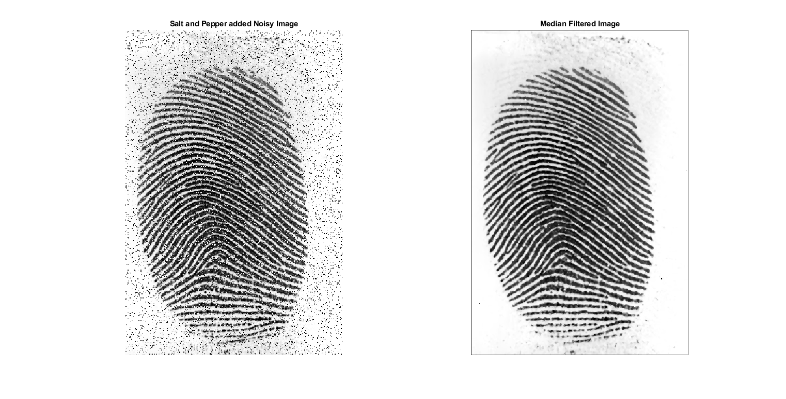

Contents
IVP Assignment 4
% Name: Chanakya Ajit Ekbote % Institute: IIT, Bhubaneswar % Date: 24.10.2020 % Degree: Btech % Branch: Electronics and Communication % Roll Number: 17EC01041
Creating a new environment.
clc; clear all; close all;
Functions Created: median_filter
% Function that returns the fedian Filtered Image. function [img] = median_filter(image, window_row, window_col) % image: The orignal image. % window_row: The row size of the window. % window_col: The column size of the window. % Note: the window is assumed to have odd rows and columns. [row_img, col_img] = size(image); img = zeros(row_img, col_img); mid_row = double(uint8((window_row + 1) / 2)); mid_col = double(uint8((window_col + 1) / 2)); % Loop that gets the median of the window. for i = 1:(row_img - window_row + 1) for j = 1:(col_img - window_col + 1) window_array = reshape(image(i:i+window_row-1, j:j+window_col-1 ... ), 1, []); median_val = median(window_array); img(i+mid_row-1, j+mid_col-1) = median_val; end end
Functions Created: contraharmonic_filter
% Function that uses a contraharmonic filter to filter the image. function [img] = contraharmonic_filter(image, filter_row, filter_col, q) % image: The orignal image. % window_row: The row size of the window. % window_col: The column size of the window. % q: Q value of the contraharmonic filter. % Note: the window is assumed to have odd rows and columns. [row_img, col_img] = size(image); img = zeros(row_img, col_img); mid_row = double(uint8((filter_row + 1) / 2)); mid_col = double(uint8((filter_col + 1) / 2)); % Loop that gets the contraharmonic value of the window. for i = 1:(row_img - filter_row + 1) for j = 1:(col_img - filter_col + 1) window_array = double(reshape(image(i:i+filter_row-1, j:j+filter_col-1 ... ), 1, [])); num = 0; den = 0; for k = 1:(filter_row*filter_col) num = num + window_array(1, k)^(q+1); den = den + window_array(1, k)^(q); end img(i+mid_row-1, j+mid_col-1) = num / den; end end
Image Imports
orig_fingerprint = imread('C:\Chanakya\Projects\ivp-assignments\Assignment-3\images\fingerprint.jpg');
fingerprint = rgb2gray(orig_fingerprint);
Adding Noise to the image
Noise is added to the image via the following distribution:
[row, col] = size(fingerprint); noise = randi(255, row, col); noisy_image = fingerprint; noisy_image(noise<=15)=0; noisy_image(noise>=240) = 255; % Plotting the images figure('Name', 'Adding Noise to the Image', 'units', ... 'normalized','outerposition', [0 0 1 1]); subplot(1, 2, 1) imshow(fingerprint); title('Original Image'); subplot(1, 2, 2) imshow(mat2gray(noisy_image)); title('Salt and Pepper added Noisy Image');
Using the Median Filter
The median filtered image is obtained by the following expression:
median_filtered_image = median_filter(noisy_image, 3, 3); figure('Name', 'Median Filtering', 'units', ... 'normalized','outerposition', [0 0 1 1]); subplot(1, 2, 1) imshow(mat2gray(noisy_image)); title('Salt and Pepper added Noisy Image'); subplot(1, 2, 2) imshow(mat2gray(median_filtered_image)); title('Median Filtered Image');
Using the Contraharmonic Filter
The contraharmonic filtered image is obtained via the following expression:
contraharmonic_image_pos = contraharmonic_filter(noisy_image, 3, 3, 1); contraharmonic_image_neg = contraharmonic_filter(noisy_image, 3, 3, -1); figure('Name', 'Contraharmonic Filtering', 'units', ... 'normalized','outerposition', [0 0 1 1]); subplot(1, 3, 1) imshow(mat2gray(noisy_image)); title('Salt and Pepper added Noisy Image'); subplot(1, 3, 2) imshow(mat2gray(contraharmonic_image_pos)); title('Contraharmonic Filtering (Q=1)'); subplot(1, 3, 3) imshow(mat2gray(contraharmonic_image_neg)); title('Contraharmonic Filtering (Q=-1)');
Conclusion
Through this assignment, we observed how salt and pepper noise can be generated. We also observerved that the median filter is useful for elimating salt and pepper noise and the contraharmonic filter with a positive Q value elminates only pepper noise and with a negative Q value, elimanates only salt noise.